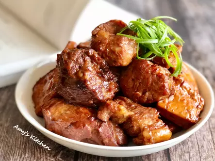

紅燒肉

紅燒肉是傳統家常菜，豬肉選梅花豬替代五花肉口感Q少油膩，用糖炒出醬色再燉滷至收汁，就是入味又嫩口的紅燒肉啦
食材
- 梅花豬肉
- 青蔥
- 黑糖或冰糖
- 滷肉包
- 米酒
- 豆干
- 老薑片
- 油
- 醬油
- 水
- 白胡椒粉
- 醬油
- 五香粉
料理步驟
- 選喜歡肥瘦的豬部位，不愛肥肉喜歡前腿瘦的梅花肉，切大塊洗淨用醃料抓掩後放冷藏醃20分鐘。
- 紅燒肉可以搭滷蛋或豆干，洗過瀝乾備用。
- 蔥洗淨剪食指長段；老薑刷洗過切片；糖可以用冰糖也可以用黑糖粉；滷包可用超市方便買的即可。
- 用不銹鋼鍋做紅燒肉，鍋中小火放油先煸薑片至有薑香。
- 醃過的梅花豬放到鍋中編至表皮微金黃。
- 再放黑糖粉進來拌炒，讓豬肉巴覆上糖粉隨鍋熱炒出醬香，這是紅燒肉上色關鍵步驟。
- 肉炒出醬色再把蔥、滷包加進來拌炒。
- 加上米酒、醬油跟豆干拌炒後加水略淹過食材，蓋鍋滷40分鐘。
- 40分鐘到打開鍋蓋挑出青蔥(避免收支巴鍋)，拌拌一下確保沒巴鍋，再蓋鍋燉20分鐘收汁，就完成啦。